Great coffee.Happy cats.Cozy space.
Kitty Brew Cat Café is where coffee lovers and cat lovers come together. Enjoy a handcrafted drink while relaxing with 20+ adoptable cats from local rescues.
Reservations recommended. Walk-ins welcome if there's room.
Never been to a cat café?
Here's how it works ~
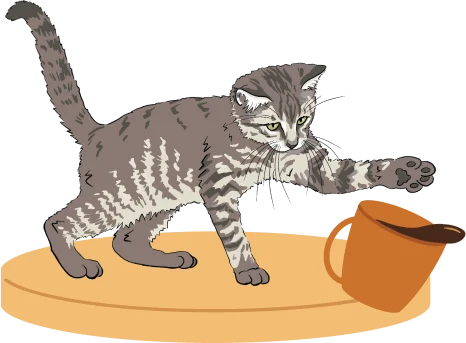
The Café
Coffees, teas, frozen treats and snacks. Free to enter and always open to the public, so grab a latte on your way to work.
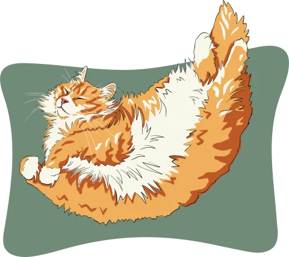
The Lounge
Spend 50 minutes playing, relaxing, or just enjoying the cats' company. $13 per person.
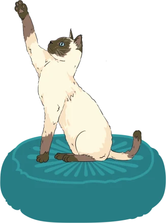
Adoptions
Fall in love? Our partner rescues can help you take a furry friend home.
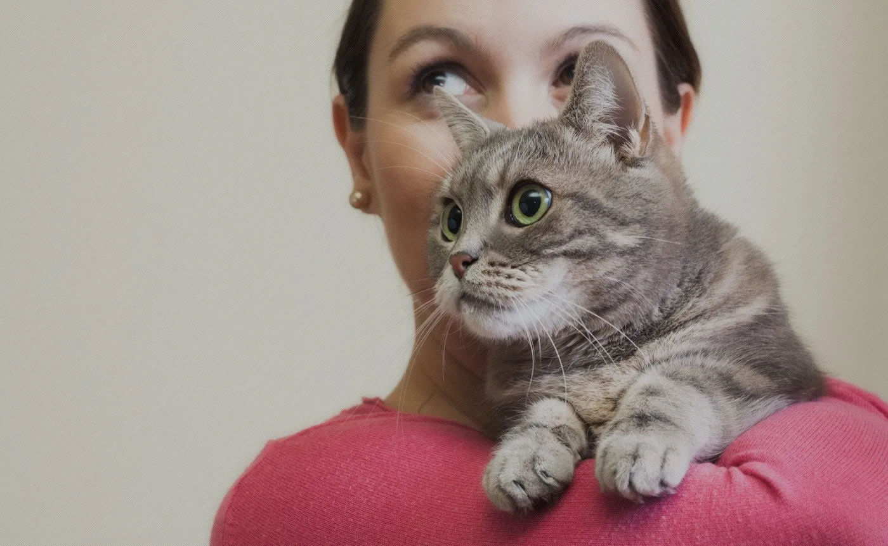
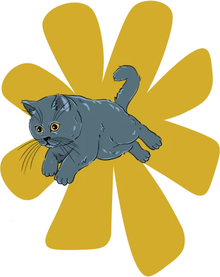
Making a difference, one cat at a time
Since opening in 2017 as Cincinnati's first cat café, we've helped over 5,000 cats find loving homes. Every visit, whether it's a latte to go or an hour in the lounge, directly supports our rescue partners.
Not looking to adopt? You're still welcome! Whether you already have pets at home, live somewhere that doesn't allow them, or just love being around cats, our lounge is the perfect place to unwind.
Cat lounge: $13 for 50 minutes. Kids 15 and under are $7 on Wednesdays.
Step inside the lounge
coffee, cozy corners & plenty of sunbeams
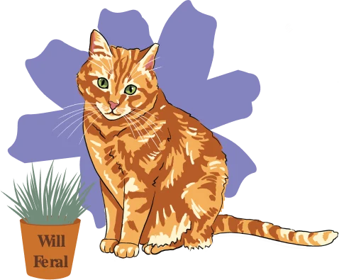
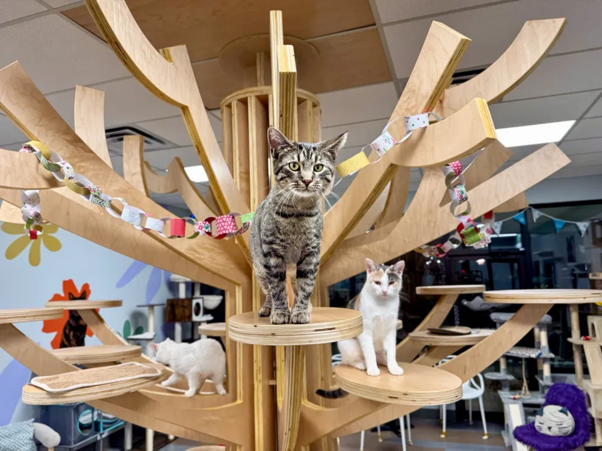
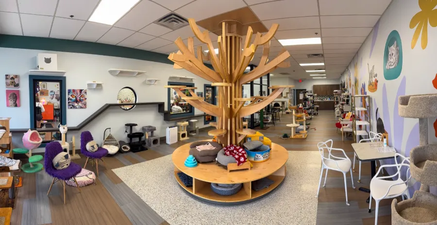
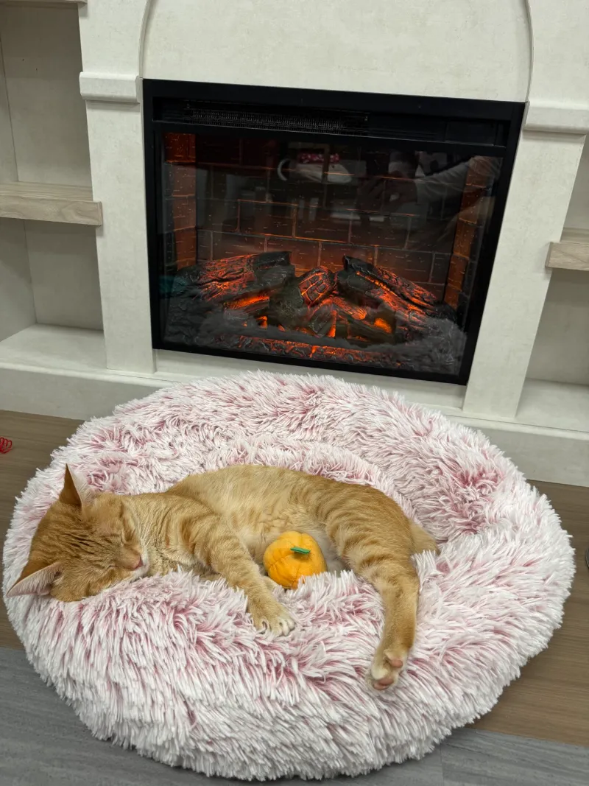
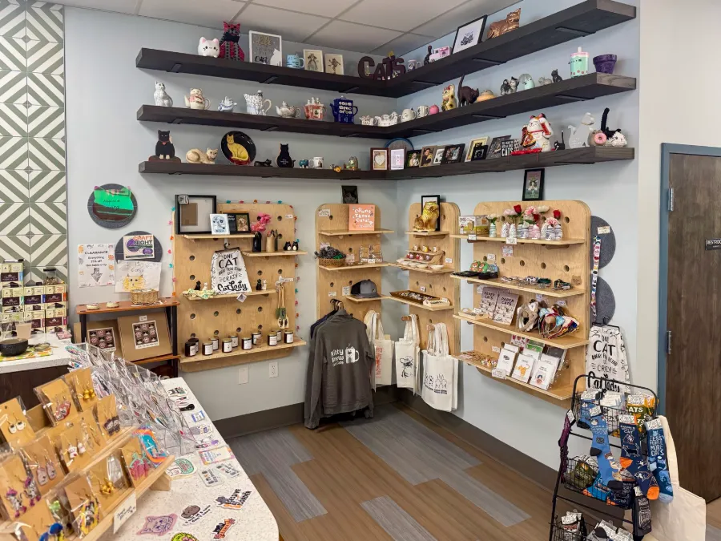
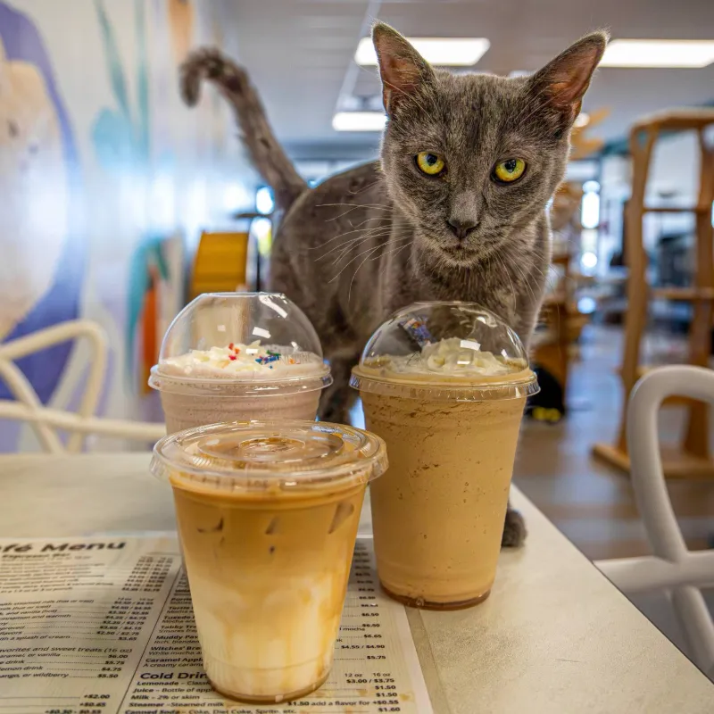
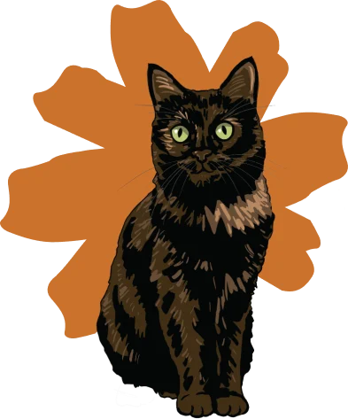
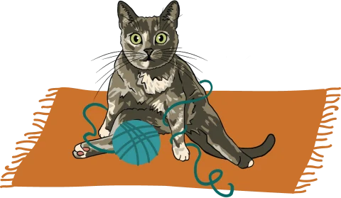
What visitors say
If you like cats and want to play with them, this is your place! If you're looking to adopt, you can find pretty much any temperament here and see how they like you. Such a calming and cat-egorically fun place 😺
I've been to several cat cafes and Kitty Brew is one of the nicest ones I've seen. The space is bigger than I expected and everything is really clean and well maintained, which matters so much when you're talking about a place with cats. … They were very healthy, relaxed, and friendly which made the whole visit feel comfortable and easy. … So glad we made the trip.
This is a wonderful place to go to interact with and adopt cats. It is also great for a family outing or date night to just play with cats even if adopting is not an option for you. The staff is friendly and creates a fun environment for visitors while prioritizing the safety and wellbeing of the cats.
Probably the most cat themed cat cafe I've been to, from cat shaped tissue boxes to a tic tac toe board to decorations hanging from the ceiling and cat wallpaper in the bathroom.
I love this place. It's a great cause, they keep it immaculate and the drinks are fabulous. … Staff is always so nice. I love getting my kitten fix and watching them play. It's my happy place.
This is probably the best cat cafe I've ever been to! … Lots of playful kittens, toys, and seating. The drinks were good too.
Kitty Brew Cat Café is a one of a kind place with really good coffee and many options to choose from. … The cats are in an entirely different room. You can enjoy viewing them through the windows or you can pay a fee to go inside the room to play with the cats. Either way it is a comfortable, clean, and relaxing atmosphere.
I went here to get a cat and they were so nice and helpful. It's really easy to find one because they're all just playing in one room and you can see how each of them act. It was such a good experience.
Highly recommend if you are looking to adopt or just need a pick me up. The coffee is good as well as the treats. Cat cafe was clean and staff was amazing. Be careful if you don't want to take a furry friend home because we almost left with a new kitty.
My husband and I were so excited to come here to try the food and drinks, and of course to see the cats! They didn't disappoint! … The muffin was warmed up and one of the best I've ever had! … The cats all seemed very well taken care of and happy! … Spending 50 minutes with all of them wasn't enough time. We'll be coming back for sure!
Really lovely café with wonderful staff. They were very warm and receptive as soon as we walked through the door and answered any questions we had. Delicious selection of drinks and treats on their menu and adorable array of gifts/merch in the gift shop area!
I had no idea places like this actually existed or at least this close to me but boy am I happy it does! … Even if you're not in a position to adopt, if you're having a bad day...pop in here for a dopamine boost. Super clean, reasonably priced, the most adorable friends and great coffee.
Our whole family spent some quality time together and with kitties last night at Kitty Brew! Great Friday night family outing. Delicious beverages and cute, playful felines. 10/10
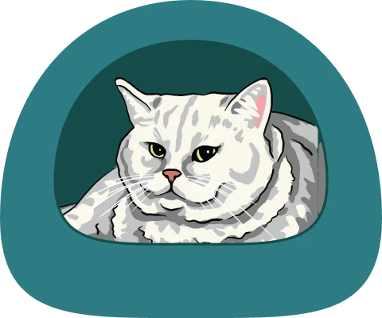
@kittybrewcafe
What's brewing at Kitty Brew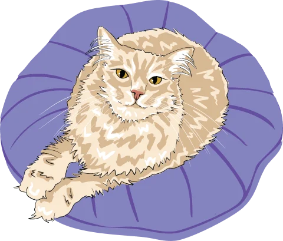
Find Us
just north of Cincinnati Kitty Brew Cat Café721 Reading Road
Mason, OH 45040
At the corner of Tylersville & Reading Road,
across from the WLW tower.